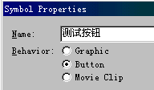
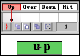
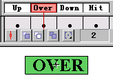
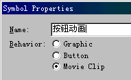
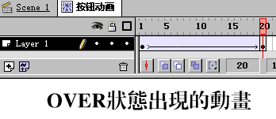
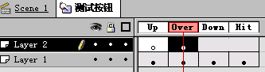
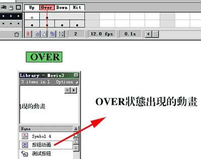

实例 建立一个动态按钮
作 者 : Kooler
下面我们要建立一个简单的动态按钮：
步骤一、按 FILE--> NEW ，开一个新 MOVIE 文件。
步骤二、按 CTRL+F8 建立一个新的 SYMBOL ，选中选项 BUTTON ，在输入按钮名：测试按钮。

步骤三、这时进入“测试按钮”的编辑状态，这时候你可以看到 4 个 FRAME ： UP 、 OVER 、 DOWN 、 HIT
，分别代表“测试按钮”的四个可编辑状态选项。
第一帧― Up ――表示鼠标指针不在按钮上时的状态。
第二帧― Over ――代表鼠标指针出现在按钮上面时的状态。
第三帧― Down ――表示鼠标点击按钮时的状态。
第四帧― Hit ――定义对鼠标做出反应的区域，这个反应区域在影像中是看不见的。
选中 UP 位置，选择绘图工具画出按钮的形状（你也可以导入 GRAPHIC 、 BITMAP 等其他元素），并输入 UP
文字。

步骤四、同时选中 UP 、 OVER 、 DOWN 、 HIT 四个 FRAME ，按下 F6 插入关键帧，并在各 FRAME
状态修改其相应文字，即在 OVER 状态将 UP 修改成 OVER ， DOWN 状态将 UP 修改成 DOWN ， HIT 状态将
UP 删除。

步骤五、按 CTRL+F8 再建立一个 SYMBOL ，选择 MOVIE CLIP ，输入按钮动画，按 OK 进入编辑状态。这个
MOVIE CLIP 是要在按钮中产生的动画。

步骤六、在 MOVIE CLIP 的编辑窗口建立一个动画，我在这里建立的是一个简单的文字（ OVER 状态出现的动画）移动。

步骤七、回到按钮的编辑窗口，插入一个新层，在 LAYER2 的 OVER 处插入一个 KEYFRAME ，将“按钮动画”从
LIBRARY 窗口拖到适当位置，这样当鼠标指针出现在按钮上面时，就会自动播放“按钮动画”这个 MOVIE CLIP 。


步骤八、回到 SCENE1 ，将“测试按钮”这个 SYMBOL 从 LIBRARY 窗口拖到场景中，再按 CTRL+ENTER
查看效果。把鼠标指针放在按钮上看看，是不是动了？如果位置还不合适的话，你可以再回到场景中调整。
OK ，一个简单的动态按钮完成了，你现在可以发挥你的想象力，利用上面教你的功能制作一个各种效果的动态按钮了。